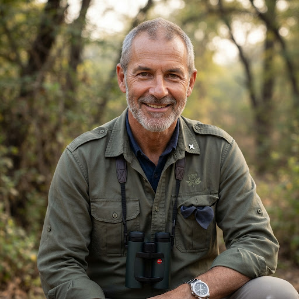
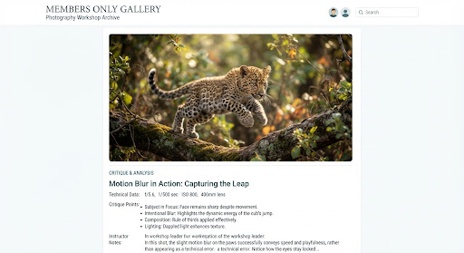

Safari Gallery
Jhalana Safari Gallery
Explore public safari moments, leopard portraits, reserve landscapes, and photography-focused experiences from Jhalana Wilds.
expand_more
expand_more
expand_more
Showing safari gallery highlights
star
STAFF PICK
Expert Analysis
The Critique Corner
Every month, our Lead Naturalist, Dr. Vikram Singh, selects three participant submissions for a deep-dive technical critique. Learn the nuances of composition, tracking, and post-processing in the wild.

Dr. Vikram Singh
Lead Naturalist

"The timing on Alexander's shot of Rana's leap is impeccable. To improve, I'd suggest a faster shutter speed—at least 1/2000s—to freeze that muscle ripple. The Aravali Sand background works perfectly here."
Master the Wild Again.
Join our exclusive 'Predator & Peak' Winter Workshop this December. Only 6 spots remaining for Masterclass members.